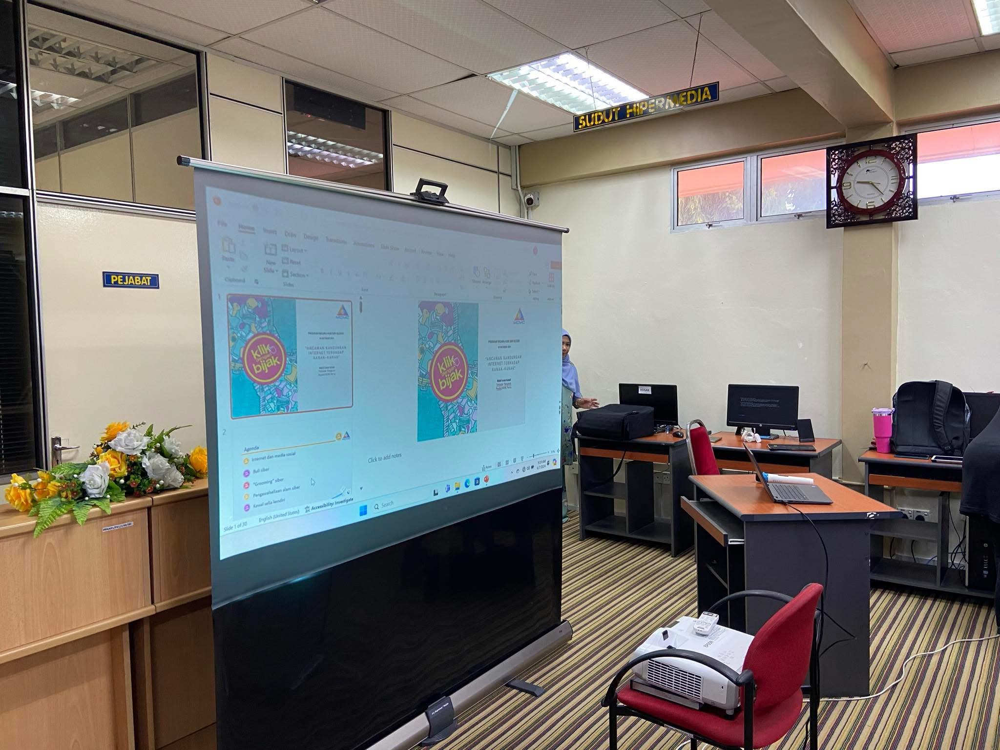

Perkhidmatan ICT
Pengenalan
Bilik Hipermedia ditubuhkan untuk menyediakan infrastruktur maklumat ke arah pembinaan tamadun ilmu di kalangan masyarakat awam. Penyediaan sumber maklumat dengan aplikasi teknologi terkini dapat mendedahkan para pengguna kepada maklumat terkini agar berada setanding dengan bangsa yang maju di alaf akan datang.
